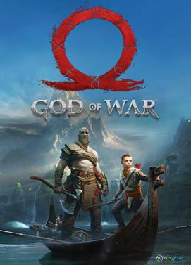

|
Spider-Man para PC es otro juego desarrollado por Insomniac Games, creadores de muchos títulos, incluidos los juegos de plataformas de acción Ratchet & Clank, el loco Sunset Overdrive y la serie de tiradores Resistance.Esta vez, los desarrolladores decidieron crear un juego de acción, aventura y perspectiva en tercera persona sobre el legendario superhéroe Spider-Man.
La trama de Spider-Man no es una adaptación directa de un cómic o una película. Insomniac Games preparó una historia completamente nueva. Sin embargo, contiene elementos clásicos como la doble vida de Peter Parker y muchos personajes conocidos.
Spider-Man para PS4 es un juego de acción en perspectiva en tercera persona que se puede comparar con la serie Batman: Arkham, especialmente en lo que respecta al combate.
Las batallas son uno de los principales atractivos del juego. sigilo, donde en lugar de participar en un combate directo, el jugador se mueve silenciosamente a través de las paredes y elimina a los matones que encuentra.. |
Requisitos Recomendados
Rendimiento promedio: 1080p a 60 fps.
Configuración gráfica: Media.
GPU: NVIDIA GeForce GTX 1060 de 6 GB o AMD Radeon RX 580.
CPU: Intel Core i5-4670 o AMD Ryzen 5 1600.
RAM: 16 GB de RAM.
SO: Windows 10 de 64 bits.
Almacenamiento: 75 GB de espacio en SSD. |
Descargar |
|  |
God of War es la quinta entrada completa en la legendaria serie de juegos slasher, es la primera entrega desarrollada exclusivamente para la consola de octava generación y para PC de Windows.El título fue desarrollado por los creadores de los juegos anteriores de la serie, Santa Monica Studios, el estudio propio de Sony Interactive Entertainment.
La serie God of War se centra en una espectacular acción llena de sangre y un impresionante sistema de batallas contra poderosos jefes, el protagonista, un guerrero griego llamado Kratos, se convirtió rápidamente en un ícono de los juegos.
Kratos vuelve a ser el protagonista principal de God of War. Después de aventuras llenas de fantasmas y locura en Grecia que terminaron con la destrucción de Olymp y la muerte de muchos de los dioses y héroes de Grecia, el protagonista escapa al lejano norte donde busca la paz. Allí encuentra un nuevo amor y forma una familia. Cuando su esposa muere repentinamente, se queda solo con un hijo pequeño llamado Atreus.
Lamentablemente, los dos no pueden vivir en paz. Los dioses nórdicos son plenamente conscientes del papel de Kratos en la caída del Olimpo y le temen. Los protagonistas se ven obligados a emprender un viaje repleto de cuerpos de bestias demoníacas y fantásticas. Durante el viaje, Kratos deberá afrontar las consecuencias de sus actos y la ira que aún sepulta en su corazón. |
Requisitos Recomendados
Requiere un procesador y un sistema operativo de 64 bits
SO: Windows 10 64-bit
Procesador: Intel i5-6600k (4 core 3.5 GHz) or AMD Ryzen 5 2400 G (4 core 3.6 GHz)
Memoria: 8 GB de RAM
Gráficos: NVIDIA GTX 1060 (6 GB) or AMD RX 570 (4 GB)
DirectX: Versión 11
Almacenamiento: 70 GB de espacio disponible
Notas adicionales: DirectX feature level 11_1 required |
Descargar |